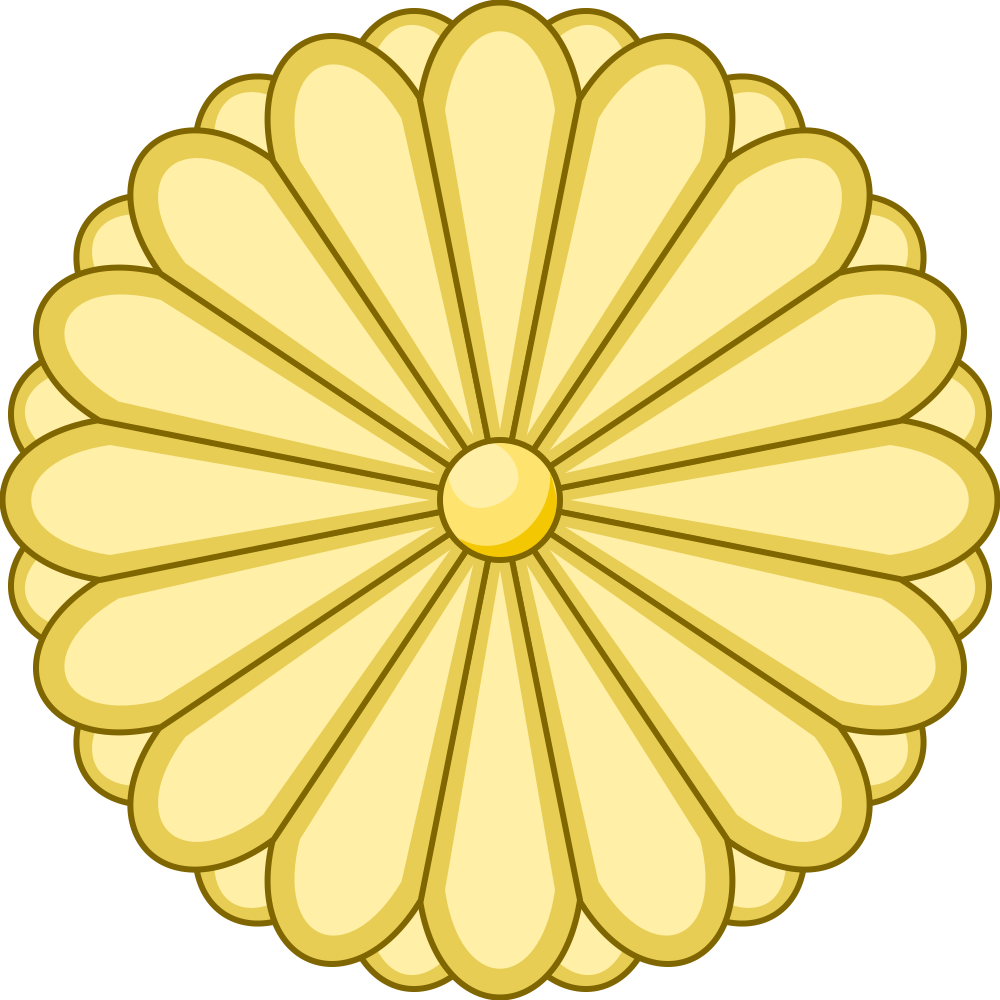
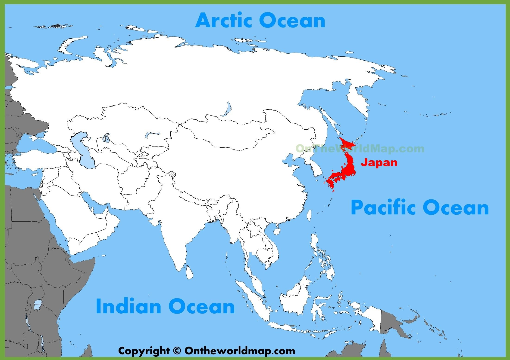
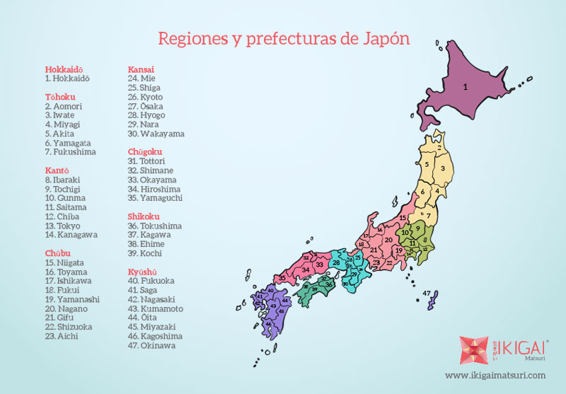

Japón es un país insular que se extiende a lo largo de la costa Pacífica del nordeste de Asia. La isla principal es Honshu, y las otras tres más grandes son Hokkaido, en el norte del país, y Shikoku y Kyushu en el sur. Más de 4.000 pequeñas islas rodean a estas cuatro principales. Las islas principales están conectadas mediante un moderno sistema de transporte, del que forma parte el túnel Seikan, el mayor túnel ferroviario del mundo, con una longitud de 54 kilómetros. Los trenes japoneses de alta velocidad (conocidos como shinkansen, o trenes-bala) enlazan las principales regiones del país.

| Letra en japones | Furigana | Romanji | Español |
|---|---|---|---|
|
君が代は 千代に 八千代に さざれ石の いわおとなりて こけのむすまで |
きみがよは ちよに やちよに さざれいしの いわおとなりて こけのむすまで |
Kimi ga yo wa Chiyo ni Yachiyo ni Sazare ishi no Iwao to narite Koke no musu made |
Que su reinado, señor, dure mil generaciones, ocho mil generaciones, hasta que las piedras se hagan rocas y de ellas brote el musgo |
| Bandera oficial | Sello |
|---|---|
|
|
 |
| Ubicacion en el mundo | Limites y paises vecinos | Regiones y prefecturas |
|---|---|---|
|  |

|
 |